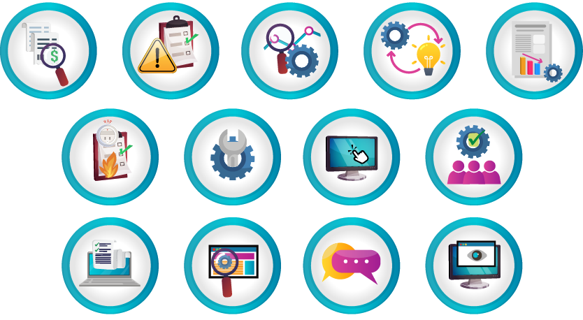
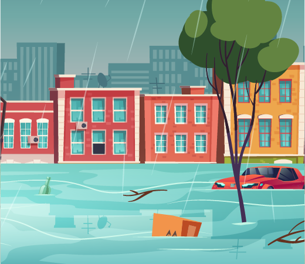
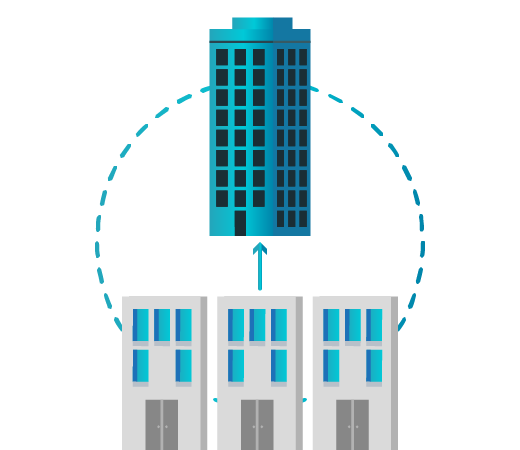
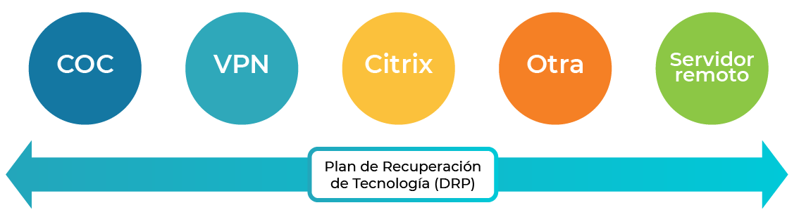

El Banco Popular ha implementado un Sistema de Gestión de Continuidad de Negocio (SGCN), con el fin de asegurar la ejecución de las operaciones en sus actividades esenciales y críticas en caso de una interrupción del negocio.
El SGCN se encuentra conformado por los siguientes planes:
Resiliencia Organizacional en Continuidad de Negocio
Contar con un Plan de Continuidad de Negocio y fortalecer la Resiliencia Organizacional contribuye significativamente a superar las crisis generadas por eventos inesperados como crisis económicas, emergencias sanitarias, conflictos sociales y/o políticos. Estos son elementos diferenciadores que incrementan la ventaja competitiva y el nivel de resistencia.
Para que las organizaciones sean resilientes y cuenten con un adecuado Sistema de Gestión de Continuidad se deben implementar:
Política de Continuidad de Negocio
Inicio
La Política Corporativa de Continuidad de Negocio fue definida con la participación activa del Banco Popular, y tiene como objetivo establecer los lineamientos generales para la adecuada implementación y mantenimiento del SGCN en Grupo Aval y sus Entidades Subordinadas.
Pulsa los botones para conocer el contenido de esta Política.
Introducción
La Política de Continuidad de Negocio describe la importancia de la Gestión de Riesgos de Continuidad de Negocio como un pilar fundamental del objeto social del Banco y la responsabilidad como Entidad sometida a inspección y vigilancia por parte de la Superintendencia Financiera de Colombia.
Objetivos
El objetivo principal de la Política de Continuidad de Negocio es definir los lineamientos generales, para la adecuada implementación y mantenimiento del SGCN del Banco Popular, con el fin de asegurar la ejecución de las operaciones en sus actividades esenciales y críticas en caso de una interrupción del negocio.
Alcance
La Política es el marco de gobierno del SGCN y se constituye en una herramienta de consulta la cual deben cumplir tanto empleados directos como trabajadores en misión.
Declaración de Compromiso
Describe el compromiso que adquiere el Banco ante sus grupos de interés, los cuales se pueden ver comprometidos ante incidentes, emergencias, desastres y crisis.
Lineamientos Generales
Los lineamientos generales incluidos en la Política de Continuidad de Negocio son:

Estructura de Gobierno
Pasa el mouse sobre los textos resaltados
La Política de Continuidad de Negocio incluye la descripción de roles y responsabilidades de Líneas de Defensa Frente a la Gestión de Riesgos, Junta Directiva, Comités, Gerencias, Direcciones y Contraloría Interna.
Escenarios de Riesgo para la posible activación del SGCN
Inicio
Pulsa los botones para conocer los potenciales escenarios que pueden conllevar a un incidente o crisis.
Vinculación con procesos judiciales
Vinculación del Banco con personas o entidades cuestionadas por la justicia, por temas relacionados con lavado de activos, financiación del terrorismo, narcotráfico u otros procesos jurídicos que puedan afectar la imagen del Banco.
Continuidad de los proveedores críticos
Incidentes relacionados con los proveedores críticos que afectan el normal desarrollo en la operación de los procesos del Banco.
Incumplimiento de normatividad y leyes
Incumplimiento de regulación o normatividad colombiana, cuyas sanciones lleven al cierre de la operación.
Seguridad de los clientes
Incidentes relacionados con la seguridad y protección que brinda el Banco a sus clientes que por su magnitud generen impacto a nivel nacional.
Daño / afectación a instalaciones físicas
Eventos que impiden el acceso o causan daños físicos a instalaciones del Banco, afectando su uso y disponibilidad.
Lesiones físicas a las personas
Incidentes que involucran lesiones físicas o traumáticas a una o varias personas dentro de las instalaciones del Banco que afecten la operación o la imagen del Banco frente a la opinión pública.
Cese laboral
Incidentes relacionados con actividades sindicales, cese de labores o huelga.
Eventos externos
Eventos externos que puedan afectar el normal desarrollo de la operación del Banco, por ejemplo: desastres naturales, alteración del orden público y clima, entre otros.

Información falsa, nociva o perjudicial
Información falsa, nociva y perjudicial en contra del Banco, con circulación y propagación a través de diferentes medios, y proveniente de fuentes desconocidas o de dudosa procedencia.
Incidentes tecnológicos
Incidentes en la tecnología del Banco que imposibilitan su uso por un periodo superior a 4 horas continuas (previsibles o no), generando interrupción en las grandes ciudades o incremento en el número de reclamos.
Seguridad de la información - Ciberseguridad
Fraudes o actividades internas y/o manejo de información privilegiada que afecten el patrimonio del Banco.
Incidentes relacionados con filiales
Situaciones de crisis en las que se vean involucradas las filiales y que afecten la imagen del Banco.

Estrategias de Recuperación de Procesos
En Banco Popular contamos con un conjunto de actividades que permiten mantener o recuperar la continuidad de una operación, proceso o tecnología, a pesar de presentarse eventos de falla, interrupción o desastre.
Pulsa sobre los íconos y textos resaltados.

Dato de interés
Actividad
Ha llegado el momento de detener a Gerard, y así recuperar la operación del Banco Popular y minimizar los impactos.
Pulsa el botón "Ir a las preguntas" para resolver algunas actividades.
IR A LAS PREGUNTAS
Plan de administración de crisis
Objetivo: Establecer los protocolos y/o procedimientos que permitan la activación y escalamiento de una crisis o incidente que afecte o pueda afectar la reputación, imagen u operación del negocio.
Plan de comunicaciones corporativas
Objetivo: Definir los lineamientos y procedimientos que utilizará el negocio para comunicar interna y/o externamente incidentes o eventos que puedan generar una crisis y afectar directamente a la Entidad.
Planes de recuperación de procesos
Objetivo: Definir las estrategias y procedimientos que permitan mantener la continuidad de los servicios y procesos prioritarios en caso de la ocurrencia de un evento de desastre o interrupción.
Plan de emergencias
Objetivo: Minimizar las lesiones y pérdidas de vidas humanas, y protección de las instalaciones.
Plan de recuperación tecnológica
Objetivo: Establecer las estrategias y procedimientos que permitan mantener la continuidad de la plataforma tecnológica.
Esquemas de gobierno definidos con sus roles y responsabilidades.
Comunicaciones ágiles, asertivas y eficientes.
Enfoque holístico de la Gestión de Riesgos.
Desarrollo de competencias en el personal, tales como flexibilidad y tolerancia al estrés.
Estrategias de innovación y métodos de aprendizaje.
Lineamientos Banco Popular
Reconociendo la importancia del SGCN, el Banco define, implementa, prueba y mantiene el proceso de Continuidad de Negocio, a través de: Prevención y atención de emergencias, Administración de escenarios de crisis, Comunicación en crisis, Planes de contingencia y Retorno a la Operación Normal.
Gestión de Riesgos
Gestionar riesgos de indisponibilidad de: Infraestructura de TI, Talento Humano, Infraestructura Física y Proveedores Críticos.
Análisis de Impacto al Negocio (BIA)
Identificar los productos, servicios y procesos críticos a través de la metodología BIA.
Estrategias de Respuesta
Documentar a través de manuales y procedimientos las estrategias de continuidad, las cuales deben cumplir las fases de respuesta y recuperación ante posibles indisponibilidades.
Plan de Gestión de Crisis
Fortalecer la cultura de Continuidad de Negocio al interior del Banco para que todo el personal entienda y conozca su rol en un evento de crisis.
Plan de Emergencias
Condiciones y procedimientos que prevengan situaciones que pongan en peligro la integridad del Talento Humano.
Plan de Recuperación de Tecnología – DRP
Contar con el Plan de Recuperación de Tecnología – DRP debidamente establecido y documentado, con la asignación de roles y responsabilidades para su administración, gestión y operación.
Capacitación y Sensibilización
Mantener vigente un programa de creación y mejoramiento de la cultura de Continuidad de Negocio.
Gestión de Riesgos de Proveedores Críticos
Controlar y realizar seguimiento a los planes de continuidad de terceros críticos.
Pruebas y Ejercicios
Realizar ejercicios y pruebas de los procedimientos de Continuidad de Negocio, asegurando su consistencia con los objetivos de negocio.
Herramienta de Gestión de Continuidad de Negocio
Adoptar una herramienta tecnológica que permita gestionar las actividades del SGCN, preferiblemente que sea una herramienta a nivel corporativo.
Información y Comunicación
Comunicar los resultados de gestión del SGCN a: Junta Directiva, Comité de Auditoría y Comité de Continuidad de Negocio.
Monitoreo del SGCN
Realizar seguimiento y monitoreo a los componentes del SGCN con el fin de identificar brechas en su ejecución y operación.
Comité de Riesgos Consolidados
Comité de Riesgos No Financieros
Comité de Auditoría
Comité Corporativo Continuidad de Negocio
Comité de Continuidad de Negocio del Banco
Gerente Integral de Riesgos
Gerente de Riesgos Operacionales
Vicepresidente de Tecnología
Gerencia TI Servicios Web
Gerencia de Experiencia de Marca
Gerencia del Cuidado y Desarrollo del TH
Gerencia de Atención y Servicio al TH
Gerencia de Abastecimiento Estratégico
Gerente de Seguridad Bancaria
Gerentes Dueños de Proceso
Director de Continuidad de Negocio
Director de Confiabilidad Operativa de TI
Dirección de Seguridad y Salud en el Trabajo
Director de Infraestructura
Centro de Operación en Contingencia
Término genérico que normalmente se refiere a una instalación alterna, la cual se puede usar en caso de un evento que inhabilite las instalaciones principales donde operan los procesos o servicios.
Virtual Private Network (VPN)
Trabajo en casa a través de conexión segura VPN.
Virtualización de Aplicaciones
Citrix es una plataforma tecnológica de integración de aplicaciones (críticas para el negocio) que permite acceder de manera segura y confiable a través de dispositivos (móviles, tabletas y portátiles) en cualquier momento y lugar.
Realizar la operación crítica a través de las Filiales.
Fiduciaria Popular
Servidor remoto
Estrategia de recuperación que aplica únicamente para la Red de oficinas.
De manera transversal, estas estrategias se articulan con el Plan de Recuperación de Tecnología (DRP) a través del Centro Alterno de Procesamiento de Datos (CAPD).
Como buena práctica, los subprocesos críticos operan con estas estrategias como mínimo una vez al mes y de manera permanente durante todo el año.
El ofrecimiento de beneficios a clientes debe estar soportado y documentado en un análisis de relación costo/beneficio, de cara al portafolio completo del cliente. Si el retorno realizado con un cliente se desfasa por debajo de la media esperada, se debe contar con autorización expresa de la instancia superior que corresponda.
Está prohibido que el Banco Popular y sus filiales realicen comodatos a clientes o proveedores. Si por alguna consideración excepcional contractual se hace necesario otorgar bienes bajo esta figura, todos, sin excepción y de manera individual, deben ser previamente autorizados por la Gerencia de Cumplimiento – Dirección ABAC, basados en documentación robusta de cada operación suministrada por la primera línea de defensa a cargo de dicha transacción.